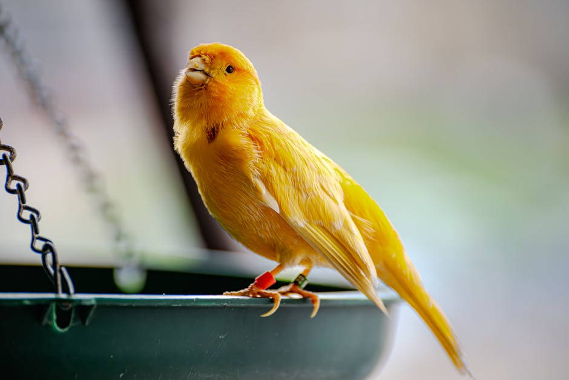
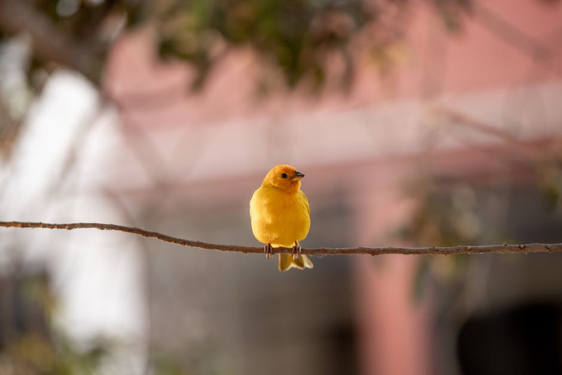
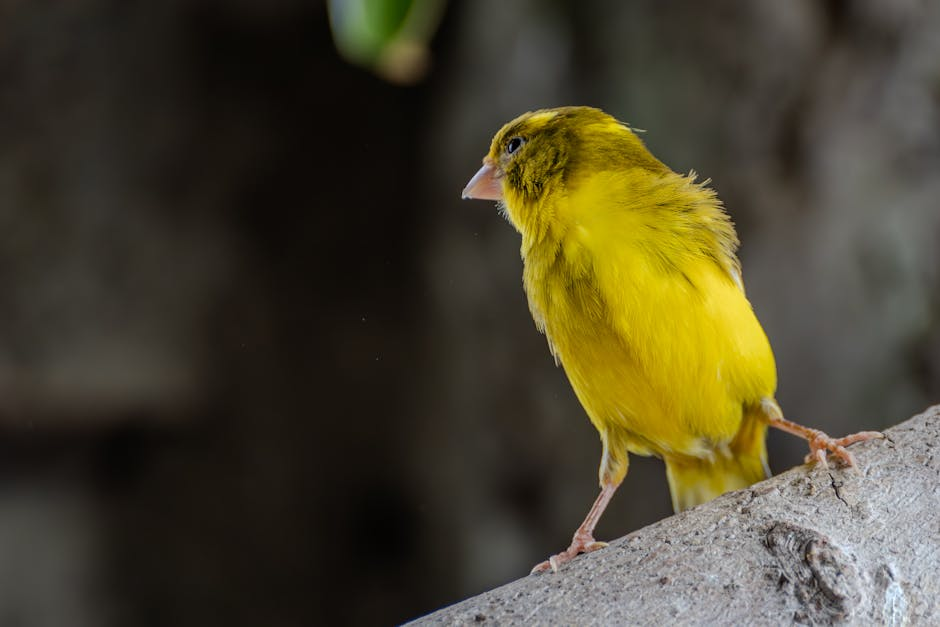
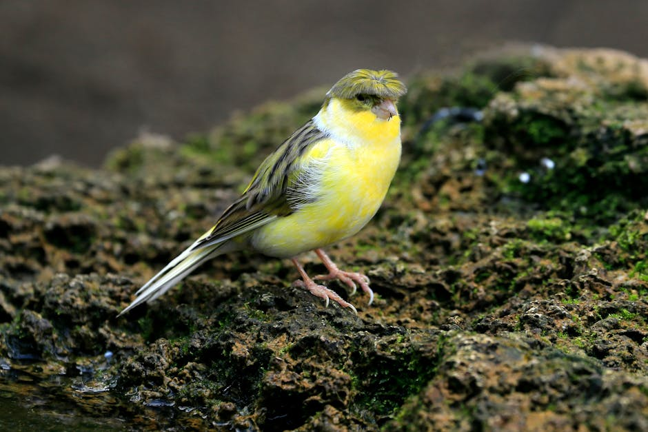
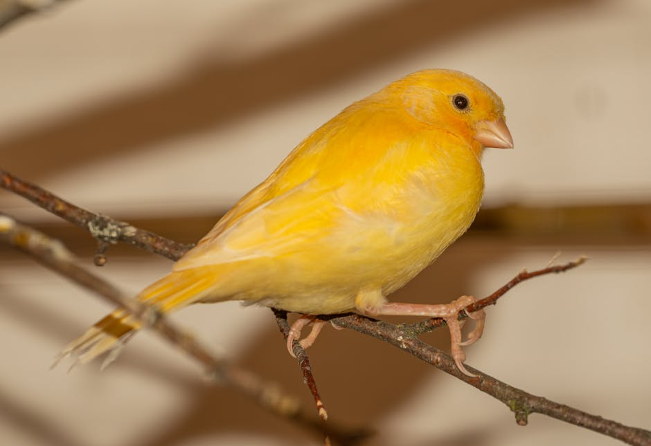
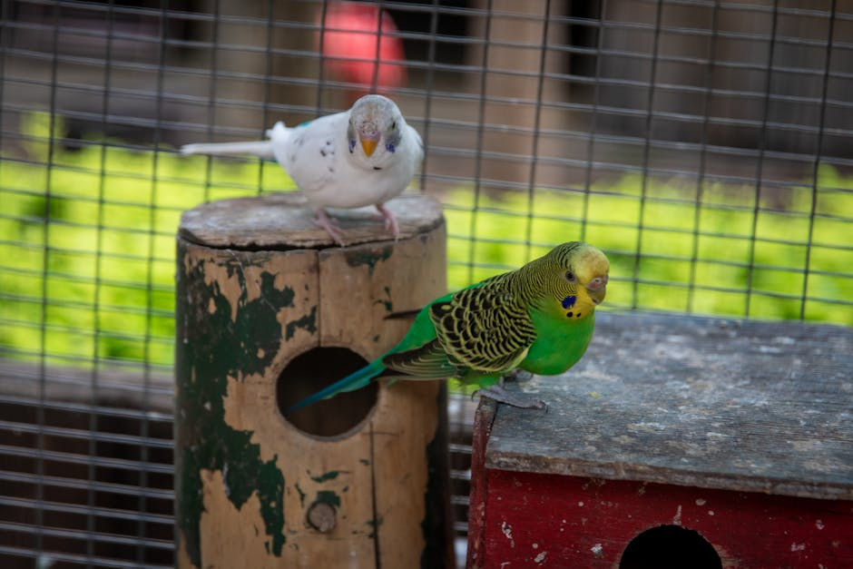
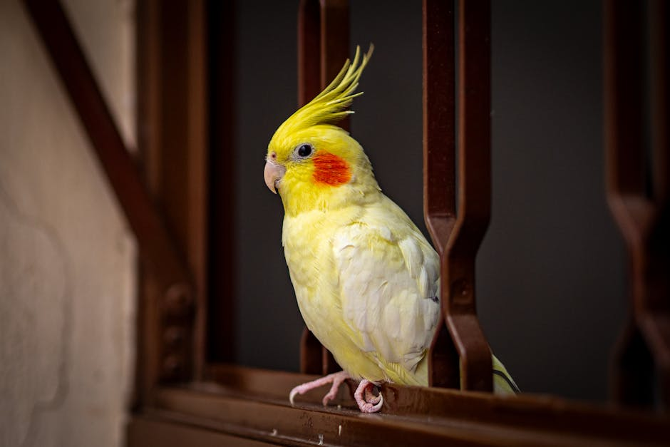

Početna · Kategorije · Ptice
Ptice
Kanarinci pevači, papagaji i egzotične vrste — pregled rasa, standardi pevanja i protokol nege koji preporučujemo. Sve registrovane vrste su one čije držanje i razmnožavanje je u skladu sa Zakonom.
Kanarinci pevači, papagaji i egzotične vrste — pregled rasa, standardi pevanja i protokol nege koji preporučujemo. Sve registrovane vrste su one čije držanje i razmnožavanje je u skladu sa Zakonom.

Hvatanje, držanje i prodaja zaštićenih divljih vrsta zabranjeni su Zakonom o zaštiti prirode — propisane kazne idu do 2.000.000 RSD. Klub se distancira od bilo kakve trgovine ulovljenim primercima.
Pročitaj propiseBaza rasa · 14 priznatih

Pevač · meka pesma

Pevač · belgijski

Pevač · španski

Poze · sa ćubom

Poze · krupna konstitucija

Poze · vitko visok

Mali papagaj

Srednji papagaj
Saveti
Tri velika sistema ocenjivanja pevača — svaki sa svojim repertoarom „turova" (pevačkih elemenata) koji se boduju.
Pevača ne treba držati uz drugu pticu pevača iz druge škole — kanarinac uči pesmu od onog koga čuje.